| 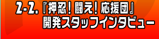 |
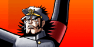
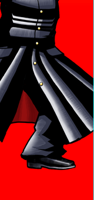 |
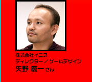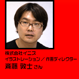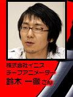
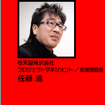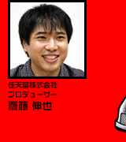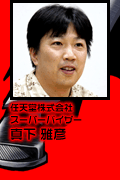 |
熱血な応援団のゲームを作ったのは、株式会社イニスの皆さん。現代人が忘れかけた熱い想いを揺り動かし、見事に思い出させてくれたスタッフの皆さんは、一体どういう方たちなのでしょう。任天堂との初コラボという開発秘話を、お邪魔して伺ってきました！
ちなみに今回は「サイトウ」氏が２人いますので、お間違えのなきようご注意を。
|
--イニスさんはどういった会社なんでしょう。
矢野：元々は音楽関係のスタッフが'97年に設立した会社です。音楽関連の仕事を暫くしていたのですが、ゲームもやりたいなという気持ちでいて、今回のソフトがコンシューマーでは２本目にあたります。任天堂さんとご一緒するのは、これが初めてですね。
--『押忍！闘え！応援団』はどういう経緯で作られたのか、教えて下さい。
佐藤：イニスさんから企画の提案がまずありました。これを持って来られた時、イニスさんだから当然音楽もので来るだろうと踏んでいたんですよね。そしたら企画書の表紙に「応援団」と書いてあって。応援団!? とびっくりしましたねえ。で、サンプルをパソコン画面で作って来て下さったんですね。あくまでイメージのデモなんですが、パソコンの液晶画面をタッチして操作しているような気分にさせるものだったんです。その絵も面白かったし、遊び自体も面白いと感じました。ただ、任天堂社内でプレゼンする段階で障害がありまして…。
--障害ですか？
佐藤：僕が昔応援団やっていたから、この企画を出したと思われたんですよね、社内の人間に(笑)。
--佐藤さんが応援団にいらしたんですか？
佐藤：そうです。大学時代は応援団の団長でした。これはもう、本当に偶然なんですよ。
齋藤（任）：だから当初は私情の詰まった企画だろうと言われましたよね（笑）。
真下：プレゼンの時、持って来られたデモを見ていて、パソコンの液晶画面を皆がボールペンの先で一所懸命つついてるんですよ。デモだから画面では本当の反応はないわけですけど、できてる気になって夢中でつついてましたよね。後ろで見ていた矢野さんが、画面が潰れるんじゃないかと心配するくらいでした。
--開発されるきっかけは何だったんでしょうか。
矢野：2004年のＥ３の時、初めてＤＳ本体を触ったんですね。２時間並んで(笑)。その時にＤＳならこの企画が行けるんじゃないかという話になりました。インターフェイスが新しいですよね。２画面ということ、タッチペンを使うということで、これなら…と。
斉藤（イ）：元々は、2002年に社内で企画を考えた所からのスタートです。音楽をテーマに何チームかに分かれて企画を考えたわけです。そのなかのひとつに、応援団というキーワードがあったということで。音楽関連はやり尽くした感がありますから、他になにかないかってことで、応援団になったんですよ。
--応援団というキーワードが出てきたこと自体がすごいと思うんですが(笑)。
鈴木：斉藤のノートに色々なキーワードが書いてあって、そのうちのひとつだったんですよ。他には消防団とか色々ありまして。音を出すものですね。
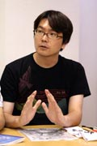
斉藤（イ）：応援団のリズムって、ちょっと独特じゃないですか。浪人生を応援するというラフ(画像参照)をプレゼン前に15分で描いたんですが、当時は一画面で考えていたんでこんな感じでした。
あと100円ショップで扇子とかハチマキを買ってきてですね…本当のところを言えば、元はアーケード用で考えていた企画なんですよね。『扇子コントローラー』とかを考えていたんですけど、アイディアは良くても技術的に難しいということでお蔵入りしちゃったんですよ。で、Ｅ３へ行って「２画面あれば行けるんじゃない？」という話になって。タッチペンの感覚なら、応援のノリが出せるよねと。
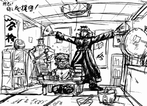
矢野：当時の問題としてあったのは、システム面というよりも既存の音ゲーとの差別化だったんですね。そこをどうすればいいのか、本当に考えました。あ、タイトルだけは当初から変わってません(笑)。
齋藤（任）：ちなみにプロジェクトスタート後、任天堂が初めてイニスさんを訪問したのが昨年の７月28日です。ちょうど今年の発売日と同じなんですよね。あれからピッタリ一年で商品になりました。
矢野：え、そうなんですか！ すごい！ すごいなあ(笑)。
齋藤（任）：一年前にこれを目にした時、とても気持ちいいゲームだったんです。この気持ちよさを早く味わってもらうために一気に作りました。
矢野：音を題材にしていますから、ある意味ナマモノ的な所がありますよね。で、応援団ですから夏に出したかったというのがあって、一年というスパンがちょうど良かったと思います。
|
--色々とご苦労があったとは思うのですが、どういった壁がありましたか？
矢野：それはそれはもう、沢山ありました(笑)。まず、任天堂さんとご一緒するのが初めてだったわけですが、任天堂さんに対する色々なイメージがあったんですよね。でも、意外と…言葉が悪いんですけど、色々な話が通りやすかったんです。カタいイメージがあったんですが、そんなこともなくて。
斉藤（イ）：絵のデザインに関しても「弾けてるのが面白い」と思っていたのですが、途中でオシャレなデザインになってしまったんですよ。従来の任天堂さん寄りに…という感覚で。でも、それを出したら「全然違う」と言われて、元の濃いのに戻しました(笑)。
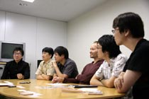
矢野：デモの時は勢いで作ってしまったんです。でもこれをゲームとしてちゃんと作るとなると、色々と考えなくてはいけないわけですよ。
真下：出来上がった製品にはキチンと勢いは残っていると思います。このソフトにはそういったオシャレな要素は必要ないという任天堂の考えを理解していただき、今の熱い絵柄になるまで両社で何度も協議を繰り返しました。
矢野：で、方向性で迷って悩んでいた時に、最初に作ったフラッシュのデモを見直したらどうかとうちの斉藤に言われて、見てみたら笑っちゃったんですね。「バッカだな〜こんなのがよく通ったよなあ」って(笑)。そこで気付いたんですよ。「あり得ない馬鹿なシチュエーション」に「クソ真面目な応援団」というギャップ、コントラストが必要なんだって。
齋藤（任）：それで、出来上がってきたものの熱さを佐藤にチェックしてもらいました。
真下：そしたら、応援団員とは長ランの襟のホックは留めているもんだと言われまして。
齋藤（任）：気合いが足りないとか、そういう部分は監修者として厳しく見てもらいました(笑)。
矢野：この言い方が良いかわかりませんが、一歩間違えると不良っぽくなってしまうんですよね。だからちゃんと作らないと…。
齋藤（任）：ゲーム中ではキッチリ動きを作るために、モーションキャプチャーを使ったんです。現役の応援団の方にお願いしまして。
--佐藤さんがやったんじゃないんですか？
佐藤：僕も休憩時間にやってみたんですけど、現役はもうキレが全然違います！
矢野：モーションキャプチャーを使う前に、実際の応援団とチアリーディングを視察に行ったんです。応援団の部室もまた風情というか雰囲気がありましたねえ。
--その感じた応援団の勢いや雰囲気というものを、どうやってゲーム中で伝えようとされましたか？
斉藤（イ）：この濃い勢いをどう表現しようかってことになった時、「黒と白のコントラストじゃないか」という話になりました。線の太さ、勢いのある線画ですね。ちょっと古い時代の少年漫画を意識して描いたんですよ。
矢野：あの種類の少年漫画は陰影を全部ペンでつけているので、黒の占める率がとにかく高いんですよね。なので、黒を意識して使いました。
鈴木：それをさらにアニメーションにするのが僕の仕事なんですけど、イントロ部分で応援団が登場するシーンがありますね。あれをどうやって笑わせるか、相当考えたりしました。とにかく一発目に笑わせたかったんです。ドアからバーンと出てくる所から始まって、どんどんわけのわからない場所から出てくるようになる(笑)。
斉藤（イ）：普通の日常では、まずあり得ないモノを入れたかったんですよ。
真下：どんな絵コンテが上がってくるか、これは本当に楽しみでした。次はどうなるのかなーと。で、何度見ても笑えるものを目指しました。
--ストーリーも個性的というか、面白いものが多いですが。
矢野：内容は社内公募をしました。「馬鹿みたいなシチュエーション募集〜」って。
鈴木：いくつかネタがあるなかでのコンセプトは、『応援がどんどんエスカレートしていく』というものでした。
真下：シナリオが来て、さらに絵コンテが任天堂に上がってくるんですけど、次はどんなのが来るかって楽しみでしたよ。ワクワクしながら待ってました。任天堂からもアイデア提案を行って、イニスさんと任天堂のいい面が結集して出来ました。
齋藤（任）：シナリオにどんな曲を当てはめるかを考えるのも楽しかったですね。
--選曲に関しては、どんな基準で？
矢野：齋藤さんと話しまして、色々なコンセプトを考えたんですが、それに沿って入れようということになりました。で、キーワードを作ろうということになったんですが、やっぱり『熱血』は外せないだろうと。さらに応援団として困った人を救うという、"愛"があるわけです。ということで、生まれたキーワードが『熱血ラブ』。
--熱血ラブ！
齋藤（任）：で、それに沿った曲で集めようということになって、真面目に議論してたんですよ。
真下：ゲームを最後までプレイしたら、きっと『熱血ラブ』がわかって頂けると思います。
矢野：選曲はキャッチーなものばかりなので、遊びやすいはずですよ。
|
--プレイ中、曲のなかでインターバルがありますよね。
矢野：これは最初なかったんです。でも、ずっとプレイしていると上画面で展開される漫画を楽しめない。でもユーザーさんは見たい…ということで入れました。「あり得ない」って言われましたけどねー。下画面を真っ暗にしてしまうなんてＤＳを最大限に使ってないってことで(笑)。
--でも、これのお陰で１曲やった後に疲れを感じませんでした。
矢野：そう言って頂けると嬉しいです。
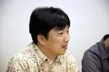
真下：今回なにが良かったかと言えば、やはりデモがしっかりと確立されていて、２Ｄアニメで昭和風な泥臭い線画が表現できた所ですよね。最近は３Ｄで洗練されたオシャレなものが多いですけど、この泥臭さや一世代前の表現が貫けたというのがすごいんだと思います。任天堂のゲームには、こういうテイストのものが少ないですが、応援団の世界観がよくマッチしていいものに仕上がったと思っています。
斉藤（イ）：とにかく「馬鹿」を研究したんです。例えば絵コンテが良くても、実際に作ってみるとあまり面白くなかったり、実装するにはまた違うものになることがあって。最初のインターフェイスは、従来のようなカタい印象でしたけど、やっぱり馬鹿を研究して…あ、メニュー画面の"土手"でモメたりもしましたね。
--土手でモメたというと？
鈴木：「応援団、練習と言えば土手でしょう」という話になったんですが、矢野は20年間アメリカで生活していたので、その感覚がわからないんですよ。なので、僕らが一所懸命に説得しました。なぜ土手なのか、と(笑)。
矢野：僕はアメリカでマーチングバンドに入っていたんですよね。その感覚だと、土手って言われてもピンと来ないんです。もっと明るくて楽しくて…という感じなので、「…土手？ なの？」みたいな。で、任天堂さんに「土手…なんですけど…」って出したら、全くもって問題がなかった。僕は「あ、そうなの…」と(笑)。
--ほかに工夫された箇所などは。
真下：やはり何度も遊んで頂きたいので、それぞれのステージの主役や助演キャラクターたちが、また別のステージで登場したりするんですね。何回もプレイしてみると、微妙にそれぞれの話が繋がっていることがわかります。で、リプレイするとさらによくわかるようになっています。
矢野：ユーザーさんには色々な視点で遊んで頂きたいので、こういう作り方にしました。ストーリーは変わりませんけど、見方が違うとかなり面白いと思います。
齋藤（任）：それぞれの難易度の調整には時間をかけました。リズムアクションゲーム初心者の方にも楽しく遊んでもらえると思います。実は、最後の難易度ではチアガールで遊ぶことができます！ぜひ到達して下さい！
矢野：多人数プレイも用意していますが、これはぜひプレイして頂きたいですね。協力プレイもできるし、対戦もできます。難易度設定もありますから、楽しくプレイして頂けますよ。
--では、楽しみにしている皆さんへメッセージをお願いします。
斉藤（イ）：このゲームでは、応援団の清々しいまでの熱血応援ぶりを楽しんで頂けると思います。ぜひ遊んで下さい。押忍！
鈴木：このゲームはパッと見や、世界観のインパクトだけでなく、それらを凌駕する内容・ゲーム性がありますので、期待してもらいたいです。『みんなで応援モード』は個人的にオススメなので、熱く応援して下さい。押忍！
矢野：これは、ニンテンドーＤＳというプラットフォームがあってこそ提案できたものです。新しい"音ゲー"として、ぜひともご期待頂きたいと思っています。困った人を助けていくということで、思いやりの心や暖かい気持ちを持って欲しい、という熱いメッセージを込めていますので、宜しくお願いします。押忍！
齋藤（任）：とにかく弾けてみました。本当に面白いので、遊んで下さい！ 押忍！
真下：リズムゲームの部分と応援団という世界観、そして漫画の絵という部分が奇跡的に融合したゲームです。これは触らないと面白さが解って頂けないと思うので、ぜひプレイして体験して欲しいと思います。タッチ・スライド・回転というわかりやすい簡単な操作にあわせてプレイして、いっぱい笑って遊んで下さい。押忍！
佐藤：押忍！
--どうもありがとうございました！ 押忍！
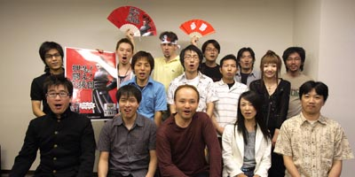
|
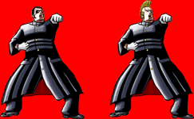
|